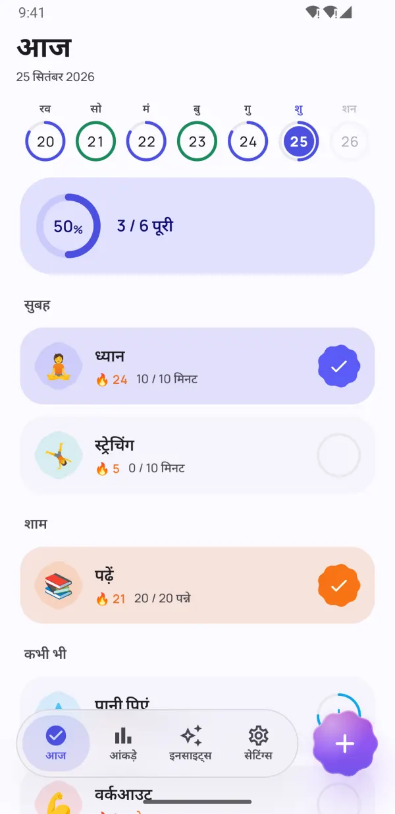
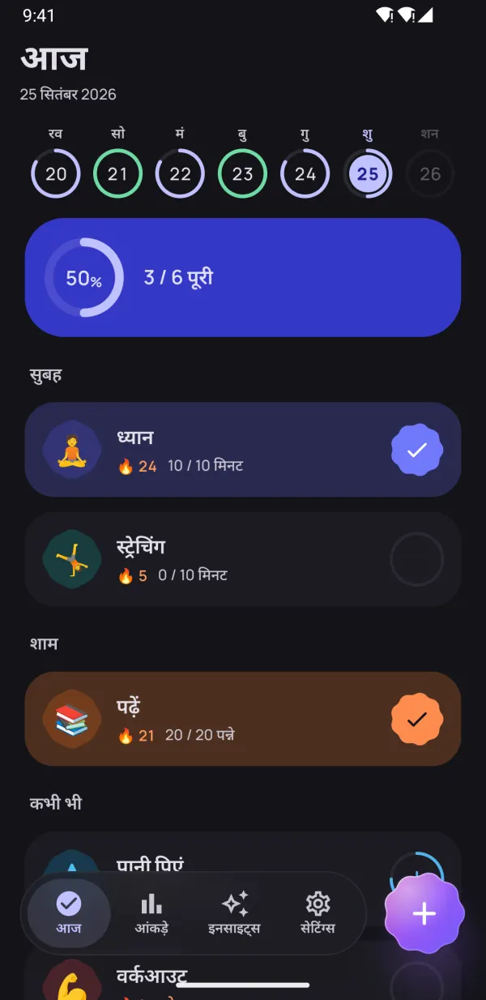
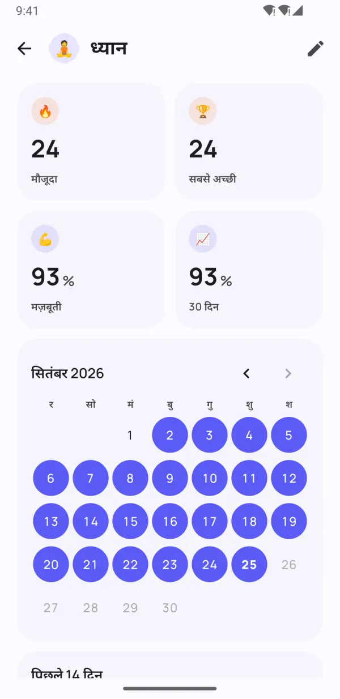
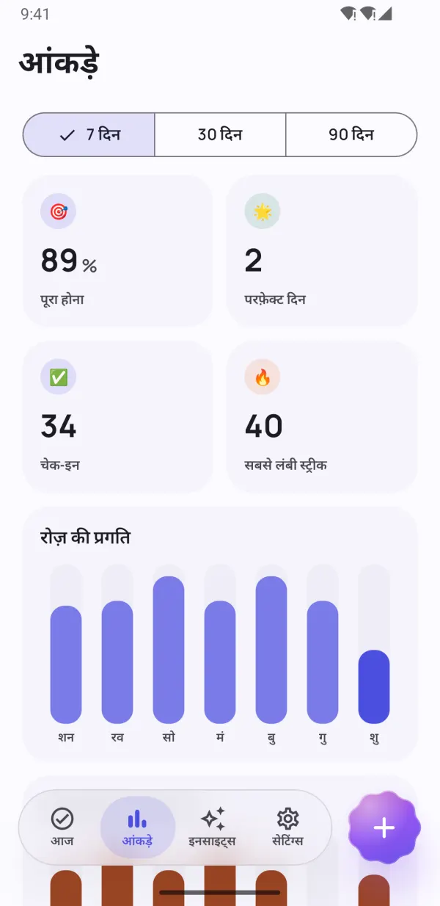
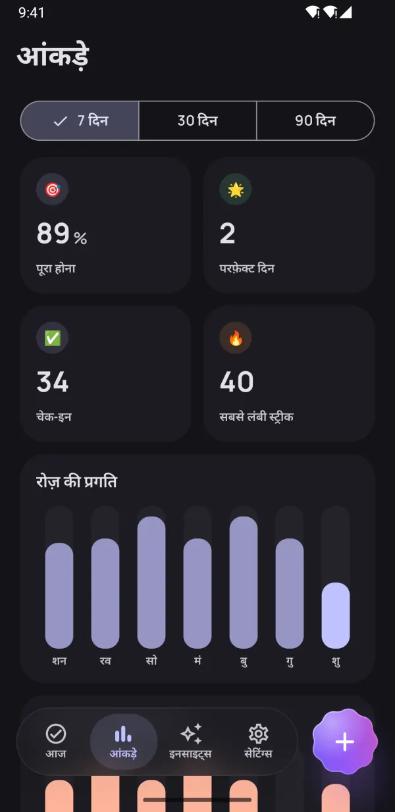
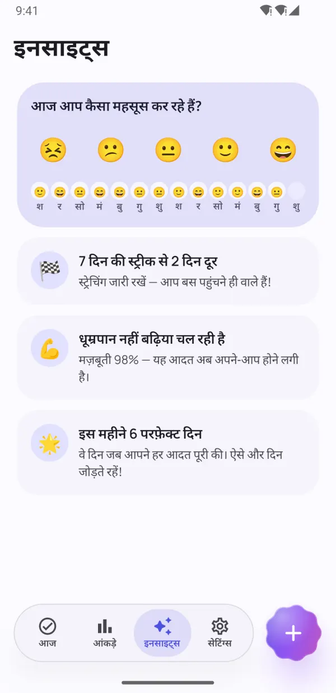
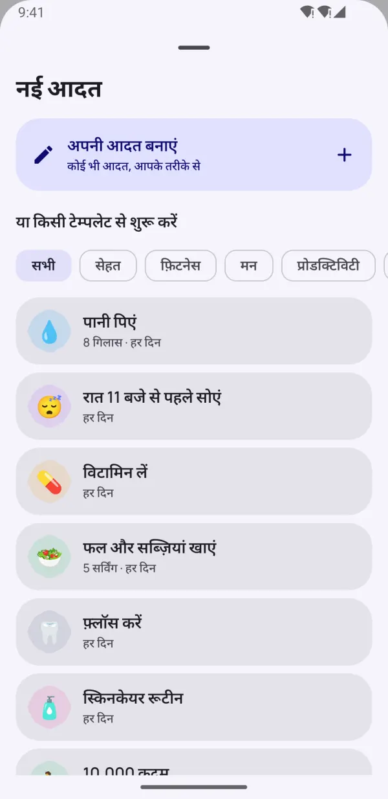
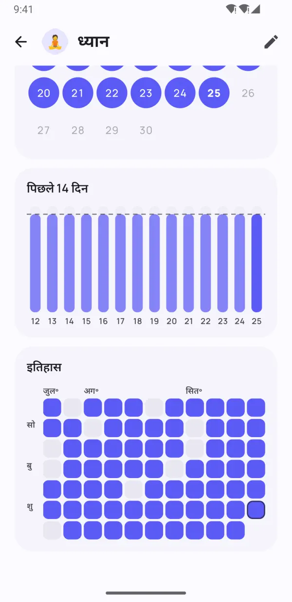

छोटी आदतें।
बड़ा बदलाव।
Dotday बिना किसी दबाव के अच्छी आदतें बनाने और बुरी आदतें छोड़ने में आपकी मदद करता है। एक टैप में चेक-इन करें, व्यस्त दिनों में भी अपनी स्ट्रीक बचाए रखें और देखें कि आपके लिए असल में क्या काम करता है।
- इस्तेमाल फ़्री
- बिना साइन-अप
- डेटा आपके फ़ोन पर ही
- 13 भाषाएं


ताकि आदतें टिकी रहें
नियमित बने रहने के लिए सब कुछ — और रास्ते में आने वाला कुछ भी नहीं।
पूरा दिन, बस एक टैप दूर
सुबह, दोपहर और शाम के ग्रुप आपकी दिनचर्या को आसान चेकलिस्ट बना देते हैं। एक टैप और काम पूरा।
- हां/नहीं, गिनती, टाइमर और छोड़ने वाली आदतें
- हफ़्ते की पट्टी में हर दिन एक नज़र में
- रिमाइंडर से सीधे "हो गया" और "10 मिनट में"

एक खराब दिन माफ़ करने वाली स्ट्रीक
आराम के दिन, लचीला शेड्यूल और स्ट्रीक फ़्रीज़ आपको आगे बढ़ाते रहते हैं। आदत की मज़बूती बताती है कि आदत असल में कितनी पक्की है — सिर्फ़ यह नहीं कि स्ट्रीक कितनी लंबी है।
- स्ट्रीक तोड़े बिना एक दिन छोड़ें
- व्यस्त या बीमारी के दिनों के लिए स्ट्रीक फ़्रीज़
- 0 से 100% तक आदत की मज़बूती का स्कोर


अपनी असली प्रगति देखें
हीटमैप, कैलेंडर और ट्रेंड साफ़ दिखाते हैं कि 7, 30 और 90 दिनों में आप कैसा कर रहे हैं।
- हर आदत का हीटमैप
- सबसे लंबी स्ट्रीक और पूरा करने की दर
- लाइट और डार्क मोड में खूबसूरत

इनसाइट्स जो हौसला बनाए रखें
एक सेकंड में अपना मूड दर्ज करें और Dotday पता लगाएगा कि असल में क्या काम करता है: आपके सबसे अच्छे और सबसे मुश्किल दिन, और कौन-सी आदतें आपका मूड बेहतर करती हैं।
- एक टैप में मूड चेक-इन
- अगले माइलस्टोन से पहले हल्का-सा हौसला
- वो आदतें खोजें जो आपको खुश रखती हैं
छोटी बातें, बड़ा फ़र्क
सोच-समझकर बनाए फ़ीचर्स, जो ट्रैकिंग को आसान बनाते हैं।
होम स्क्रीन विजेट
आज की आदतें टिक करें, स्ट्रीक या हीटमैप देखें — ऐप खोले बिना।
भरोसेमंद रिमाइंडर
नोटिफ़िकेशन से ही आदत पूरी करें या स्नूज़ करें।
बिल्ट-इन टाइमर
समय वाली आदतों के लिए लाइव नोटिफ़िकेशन के साथ टाइमर।
Health Connect
कदम, नींद और वर्कआउट से आदतें अपने-आप पूरी हो सकती हैं।
40 टेम्पलेट
पानी, पढ़ाई, वर्कआउट, मेडिटेशन, धूम्रपान नहीं — सेकंडों में शुरू करें।
दिन की प्लानिंग
आदतों को सुबह, दोपहर और शाम में बांटें।
नोट्स और मूड
किसी भी दिन नोट जोड़ें और देखें कि आदतें आपके मूड पर कैसा असर डालती हैं।
डार्क मोड और AMOLED
Material You रंग और OLED स्क्रीन के लिए पूरी तरह काली थीम।
बैकअप और एक्सपोर्ट
Pro के साथ सब कुछ JSON या CSV में एक्सपोर्ट करें और नए फ़ोन पर रीस्टोर करें।
अंदर की एक झलक
ऐसी आदतें जो टिकें अपनी असली प्रगति देखें आँकड़े एक नज़र में इनसाइट्स जो प्रेरित करें 
40 टेम्पलेट से तुरंत शुरू करें डार्क मोड में भी शानदार 
हर दिन, खूबसूरती से ट्रैक प्राइवेट। कोई अकाउंट या विज्ञापन नहीं।
अपनी आदतें चुनें
40 टेम्पलेट में से चुनें या अपनी आदत खुद बनाएं — कोई भी आदत, आपके तरीके से।
रोज़ चेक-इन करें
आज स्क्रीन, विजेट या नोटिफ़िकेशन पर बस एक टैप।
आदतें पक्की होते देखें
स्ट्रीक, आदत की मज़बूती और इनसाइट्स आपकी बढ़ती प्रगति दिखाते हैं।
आपकी प्राइवेसी, आपके हाथ में
कोई अकाउंट नहीं। कोई साइन-अप नहीं। कोई विज्ञापन नहीं। आपकी आदतें, नोट्स और मूड सिर्फ़ आपके फ़ोन पर रहते हैं — हम उन्हें कभी नहीं देखते। प्राइवेसी पॉलिसी
- कोई अकाउंट नहीं
- कोई विज्ञापन नहीं
- ऑफ़लाइन
- आपका डेटा, आपका फ़ोन
Pro के साथ सब कुछ अनलॉक करें
मुख्य ऐप हमेशा के लिए फ़्री है। अनलिमिटेड आदतों और हर फ़ीचर के लिए Pro लें — 7 दिन फ़्री ट्रायल के साथ।
- अनलिमिटेड आदतें
- पूरा इतिहास और 90 दिन के आंकड़े
- सभी इनसाइट्स और मूड कनेक्शन
- Health Connect से ऑटो-ट्रैकिंग
- सभी विजेट
- हर महीने 5 स्ट्रीक फ़्रीज़
- हर आदत के लिए 5 रिमाइंडर तक
- JSON और CSV में एक्सपोर्ट
मासिक, सालाना या एक बार की लाइफ़टाइम खरीदारी। Google Play में कभी भी रद्द करें।
अक्सर पूछे जाने वाले सवाल
क्या Dotday फ़्री है?
हां। मुख्य ऐप हमेशा के लिए फ़्री है: 5 आदतों तक, रिमाइंडर, स्ट्रीक, आज विजेट और 30 दिन के आंकड़े। Dotday Pro अनलिमिटेड आदतें और हर फ़ीचर अनलॉक करता है, 7 दिन के फ़्री ट्रायल के साथ।
क्या अकाउंट बनाना ज़रूरी है?
नहीं। Dotday बिना अकाउंट, साइन-अप या इंटरनेट के चलता है। बस इंस्टॉल करें और शुरू करें।
मेरा डेटा कहां सेव होता है?
सिर्फ़ आपके फ़ोन पर। आपकी आदतें, नोट्स और मूड कभी आपके डिवाइस से बाहर नहीं जाते। Pro के साथ आप कभी भी JSON या CSV बैकअप एक्सपोर्ट कर सकते हैं।
अगर एक दिन छूट जाए तो क्या होगा?
आपकी मेहनत बेकार नहीं जाती। आप उस दिन को आराम का दिन बनाकर छोड़ सकते हैं, स्ट्रीक फ़्रीज़ इस्तेमाल कर सकते हैं, या रोज़ के बजाय हफ़्ते का लक्ष्य रख सकते हैं। आदत की मज़बूती शून्य नहीं होती, बस धीरे-धीरे घटती है।
मैं किस तरह की आदतें ट्रैक कर सकता/सकती हूं?
चार तरह की: हां/नहीं ("मेडिटेशन"), गिनती ("8 गिलास पानी"), टाइमर ("30 मिनट पढ़ाई") और छोड़ने वाली आदतें ("धूम्रपान नहीं")।
अपनी आदतें नए फ़ोन पर कैसे ले जाएं?
Dotday Pro में सेटिंग्स → आपका डेटा → बैकअप एक्सपोर्ट करें खोलें और JSON फ़ाइल सेव करें। नए फ़ोन पर Dotday इंस्टॉल करें और बैकअप से रीस्टोर करें चुनें — रीस्टोर करना फ़्री है।
क्या iPhone वर्ज़न है?
अभी नहीं — फ़िलहाल Dotday सिर्फ़ Android के लिए Google Play पर उपलब्ध है।
Pro कैसे रद्द करें?
Google Play → प्रोफ़ाइल → पेमेंट और सदस्यताएं → सदस्यताएं खोलें, Dotday चुनें और रद्द करें पर टैप करें। लाइफ़टाइम खरीदारी को कभी रद्द करने की ज़रूरत नहीं होती।